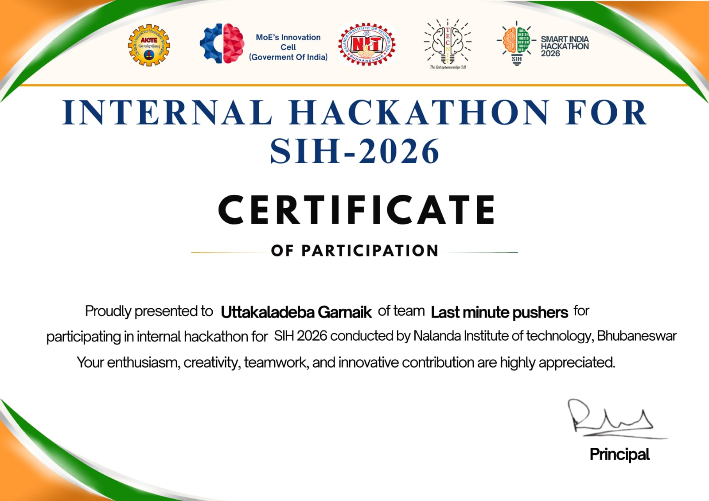

SMART INDIA HACKATHON · INTERNAL ROUND
Internal Hackathon for SIH 2026
Competed and advanced with NER Landslide Risk Monitoring, an AI-powered early-warning telemetry system tailored for Northeast India. Led full-stack architecture, backend APIs, and real-time alert mapping.
AI TELEMETRY
NODE.JS
MONGODB
GIS MAPPING